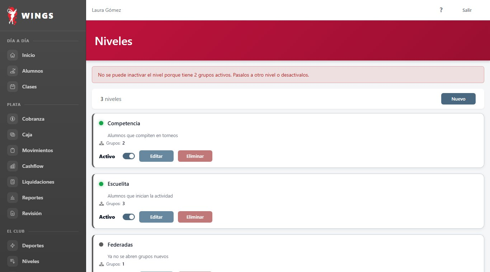
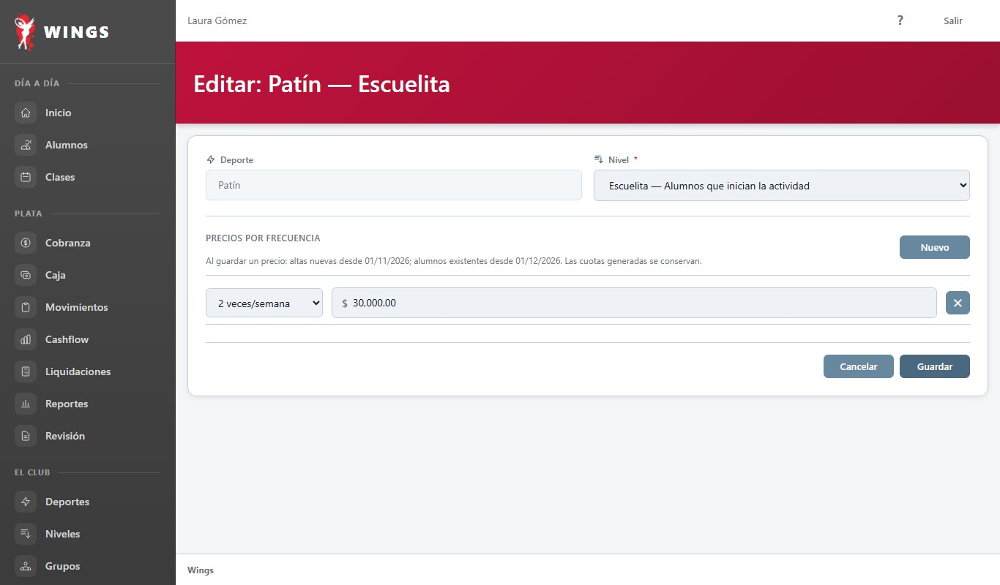
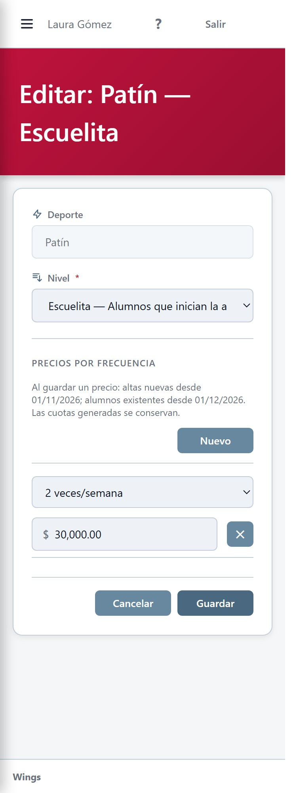

Propuesta para aprobar el aspecto, corregida con la regla de Carlos del 01/11. Capturas del HTML de Wings con sus componentes reales y datos ficticios. Todavía no está implementada: las pantallas reales no se tocaron.
El punto de la tarjeta pasa a mostrar ese estado: verde si está activo, gris si está inactivo. En celular el interruptor va en su propia fila, como en Profesores.

Hoy Nivel es un dato fijo. Pasa a ser una lista con los niveles activos. El grupo conserva sus alumnos, precios y clases. Si ese deporte ya tiene un grupo en el nivel elegido, Wings no lo cambia y avisa «Ya existe un grupo con ese deporte y nivel.».

